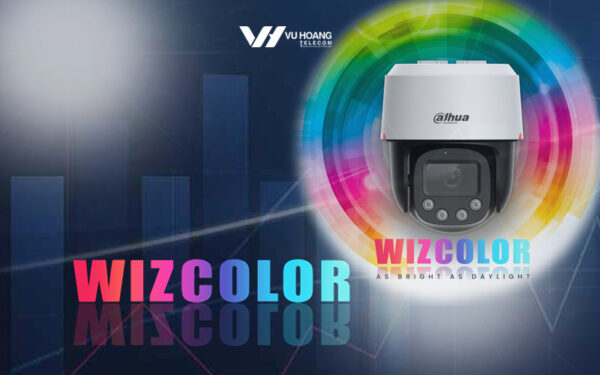
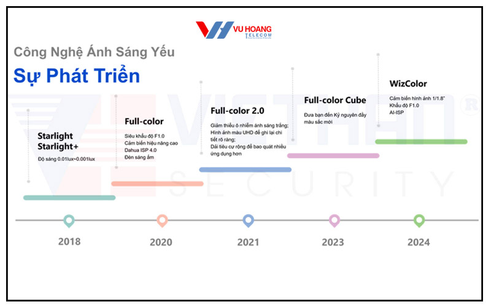
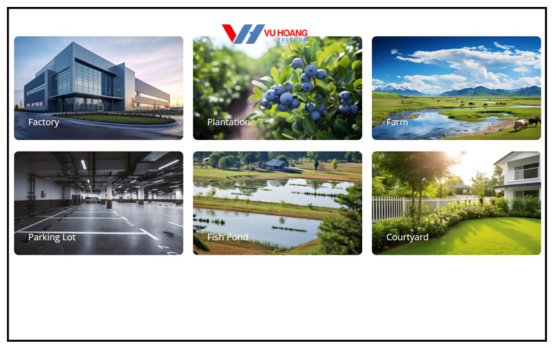

DANH MỤC SẢN PHẨM
Công nghệ WizColor có gì nổi bật? Ứng dụng như thế nào?
Đăng vào ngày: 17/10/2024
Công nghệ WizColor có gì nổi bật?
Công nghệ WizColor mới không chỉ giám sát tốt hơn trong điều kiện ánh sáng yếu. Mà còn kết hợp những yếu tố tiên tiến như AI-ISP, cảm biến kích thước pixel lớn, khẩu độ F1.0. WizColor không chỉ cung cấp hình ảnh chi tiết, rõ nét, mà còn đảm bảo hình ảnh luôn sống động kể cả khi không có ánh sáng.
Công nghệ này đã giúp định hình lại ngành công nghiệp an ninh giám sát. Mang lại những cải tiến vượt bậc trong chất lượng hình ảnh giám sát về đêm. Tăng hiệu quả cũng như tính chính xác khi bảo vệ cho con người, tài sản.
Khả năng xử lý hình ảnh vô cùng vượt trội
Công nghệ WizColor có thể xử lý hình ảnh nâng cao nhờ vào AI-ISP (Artificial Intelligence Image Signal Processing). Vừa tăng hiệu suất xử lý hình ảnh lên 40% vừa giảm được lượng tiêu thụ năng lượng đến 30%. Tiết kiệm hơn chi phí vận hành mà vẫn đảm bảo về chất lượng.
Điểm mạnh của công nghệ này phải kể đến thuật toán xử lý hình ảnh sâu. Khôi phục hình ảnh một cách chi tiết lên đến 50%. Góp phần quan trọng trong những tình huống yêu cầu giám sát chi tiết. Như trong bãi đỗ xe hay trang trại, nhà xưởng. Giảm hiện tượng mờ chuyển động đến 80%, nhận diện chính xác những vật thể di chuyển nhanh.
Công nghệ WizColor cung cấp khẩu độ F1.0 và cảm biến pixel lớn
Khẩu độ F1.0 vượt trội làm nên sự khác biệt của công nghệ WizColor. Cung cấp khả năng hấp thụ ánh sáng gấp 2.5 lần so với khẩu độ F1.6, đảm bảo camera thu được nhiều ánh sáng hơn. Từ đó, cung cấp hình ảnh rõ nét kể cả khi ánh sáng yếu.
Cảm biến pixel lớn cho phép hấp thụ photon nhiều hơn để chuyển đổi ánh sáng sang tín hiệu điện mạnh hơn. Không chỉ giúp cải thiện độ sáng mà còn giảm nhiễu hình ảnh. Đảm bảo rằng những chi tiết quan trọng sẽ không bị bỏ lỡ kể cả khi ánh sáng yếu.
Khôi phục màu sắc chân thực hơn
Công nghệ WizColor có khả năng khôi phục màu sắc lên đến 30%. Thuật toán xử lý màu sắc nâng cao giúp cho hình ảnh vừa rõ ràng vừa chân thực về màu sắc. Nhận diện đối tượng trong các tình huống dễ dàng hơn. Giảm nhiễu tối ưu hơn, giúp cho hình ảnh luôn rõ nét, không bị nhiễu, không bị mờ kể cả khi thiếu sáng.
Công nghệ WizColor giúp giám sát xa hơn với khoảng cách nhận diện lớn
Công nghệ đã mở rộng hơn khoảng cách giám sát. Nhận diện vật thể từ xa để giám sát tốt hơn trong những khu vực rộng lớn. Chẳng hạn như trang trại, bãi xe, nhà máy và những ứng dụng ngoài trời khác. Cải thiện khả năng phản ứng trước những tình huống an ninh khẩn cấp một cách đáng kể.
Hỗ trợ xử lý biến dạng hình ảnh
Đối với những tình huống an ninh có phần phức tạp, khi camera bị biến dạng hình ảnh sẽ gây ảnh hưởng tới khả năng nhận diện mục tiêu. Công nghệ WizColor ra đời tích hợp công nghệ chỉnh sửa biến dạng hình ảnh. Từ đó khôi phục những chi tiết đã biến dạng, đảm bảo hình ảnh ghi lại được một cách chính xác nhất. Điều này đóng vai trò quan trọng nhất là khi giám sát tại những khu vực có cảnh quay phức tạp hay góc nhìn rộng.
Công nghệ WizColor được ứng dụng như thế nào?
Hỗ trợ giám sát cho nhà máy, khu công nghiệp
Nhà máy, khu công nghiệp thường hoạt động thâu đêm. Việc giám sát liên tục giúp đảm bảo an ninh một cách toàn diện. Công nghệ WizColor cung cấp hình ảnh về đêm chất lượng. Phù hợp dùng để lắp đặt ở những khu vực rộng lớn. Nơi mà ánh sáng yếu làm giảm hiệu quả khi dùng camera thông thường. WizColor giúp nhà máy giám sát tốt hơn những hoạt động sản xuất. Từ đó phát hiện các mối đe dọa một cách nhanh chóng.
Giám sát bãi đỗ xe
Bãi đỗ xe là khu vực phức tạp phải được giám sát chặt chẽ, nhất là về đêm. Công nghệ WizColor giúp nhận diện biển số nhanh chóng với độ chính xác cao. Phân biệt rõ những vật thể chuyển động, giúp giảm nguy cơ bị mờ hay nhiễu sóng.
Bảo vệ an ninh cho khu dân cư và nông trại
Giám sát an ninh khu dân cư đòi hỏi hệ thống camera hoạt động tốt trong mọi điều kiện ánh sáng. Công nghệ WizColor không chỉ mang đến hình ảnh rõ nét mà còn giúp hình ảnh luôn chân thực. Từ đó dễ dàng phát hiện ra hành vi bất thường. Bên cạnh đó, những khu vực trang trại thường gặp khó khăn để đảm bảo an ninh về đêm do thiếu sáng. Công nghệ WizColor cung cấp giải pháp giám sát lý tưởng dành cho những môi trường không có ánh sáng tự nhiên. Đảm bảo mọi khu vực luôn được giám sát chặt.
Tại sao nên sử dụng công nghệ WizColor?
Công nghệ WizColor đã tạo nên bước tiến mạnh mẽ trong lĩnh vực an ninh giám sát. Màu sắc chân thực, hiệu suất cao trong điều kiện thiếu sáng. Cùng với khả năng xử lý hình ảnh tiên tiến. Tất cả giúp cho Wiz Color trở thành lựa chọn hàng đầu cho hệ thống an ninh giám sát của gia đình, tổ chức, doanh nghiệp hiện nay.
Nếu đăng boăn khoăn tìm kiếm giải pháp an ninh toàn diện, hiệu quả thì WizColor là câu trả lời tối ưu nhất. Đầu tư hệ thống giám sát ứng dụng công nghệ WizColor mới giúp nâng cao hơn chất lượng giám sát. Cải thiện độ chính xác và tính an ninh. Không chỉ là lựa chọn thông minh mà còn giúp bảo vệ an ninh trong tương lai.
Liên hệ vuhoangtelecom.vn để được hỗ trợ và tư vấn thông tin liên quan nhanh nhất ngay nhé!
HỖ TRỢ KHÁCH HÀNG
- Hướng dẫn mua hàng
- Hình thức thanh toán
- Chăm sóc khách hàng
- Tiêu chí bán hàng
- Đăng ký Đại lý
TỔNG ĐÀI HỖ TRỢ
- Mua hàng:
- Tại HCM: (028) 35 166 166 (08:00 – 17:30)
- Tại HN: (024) 6256 1111 (08:00 – 17:30)
- Tại Nha Trang: 0915 810 810 (07:30 – 15:30)
- Kỹ thuật & Bảo hành:
- Tại HCM – Nha Trang: 1900 9259 – Bấm số 1
- Tại HN: 1900 9259 – Bấm số 2
- Khiếu nại, CSKH: 0902 51 53 55 (24/7)
CHÍNH SÁCH VÀ QUY ĐỊNH
- Chính sách giao nhận
- Chính sách bảo hành
- Chính sách dùng thử sản phẩm
- Chính sách đổi trả sản phẩm
- Chính sách bảo mật thông tin
- Bảng giá dịch vụ lắp đặt, bảo trì
THÔNG TIN CÔNG TY
- Giới thiệu Vuhoangtelecom
- Tin tức Vuhoangtelecom
- Tin tức công nghệ
- Tin tuyển dụng
- Liên hệ
Hotline: 030 652 4177
Trụ sở chính: Số 3A Trần Quý Cáp, Phường 12, Quận Bình Thạnh, Thành phố Hồ Chí Minh